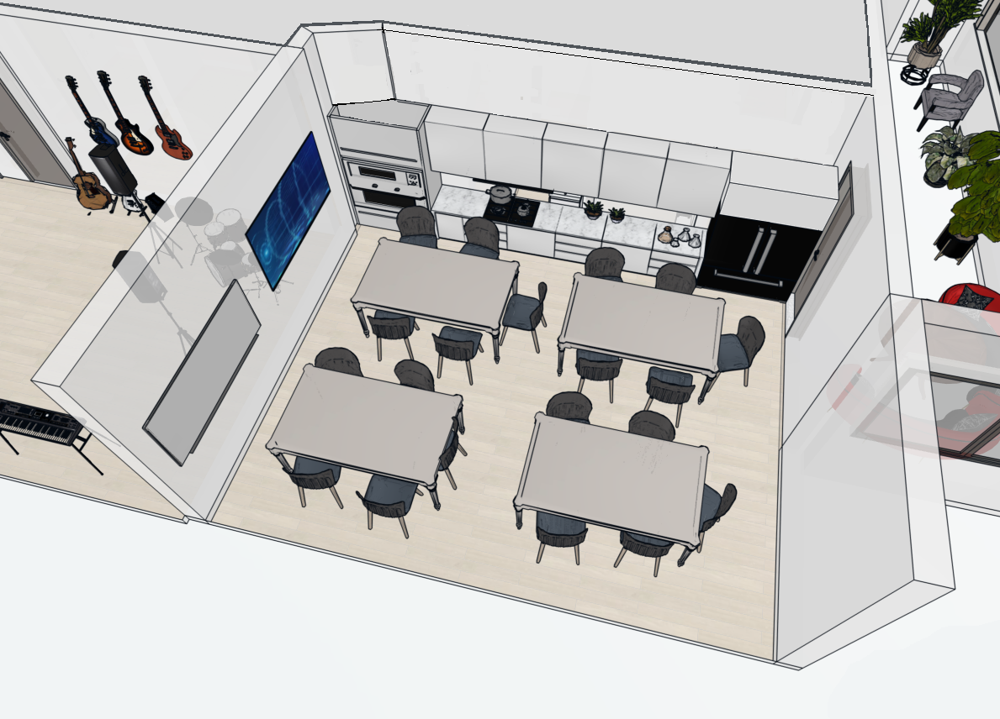

Central mötesplats för samordning, planering och gemensamma digitala aktiviteter i verksamheten.

Matsalen är en gemensam samlingsplats i verksamheten. Här äter deltagare och personal lunch mellan 11.30 och 12.30.
Rummet används även för planering, möten och gemensamma aktiviteter med både personal och deltagare.